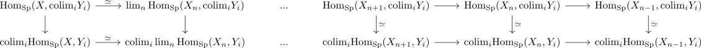

Hom out of a finite type spectrum preserves filtered colimits of n coconnective spectra
Proposition
Let $X$ be a finite type spectrum, then the functor
\begin{align*}
\mathrm{Hom}_{\mathrm{Sp}}(X,-): \mathrm{Sp} \rightarrow \mathrm{Sp}
\end{align*}
preserves filtered colimits consisting of n coconnective spectra.
Proof
Let $Y_i$ be a filtered diagram consisting of n coconnective spectra. Then we have a diagram

where we have used that $X_n$ is a finite spectrum, hence compact (cf. equivalence of finite / dualizable / compact spectra) and $X \simeq \mathrm{colim}_{n} X_n$.
todo:
- think this should be an argument about sequential limit with eventually constant homotopy objects for a complete t-structure